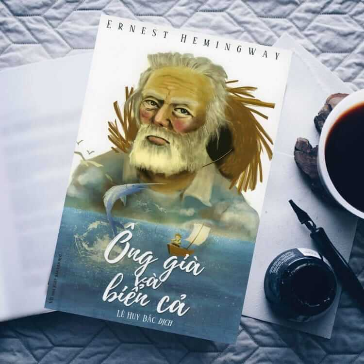
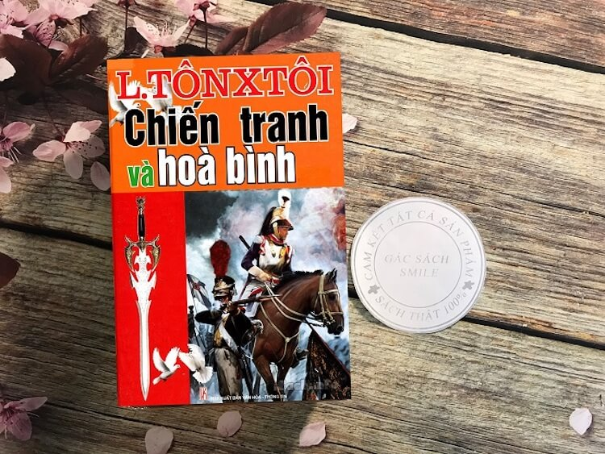
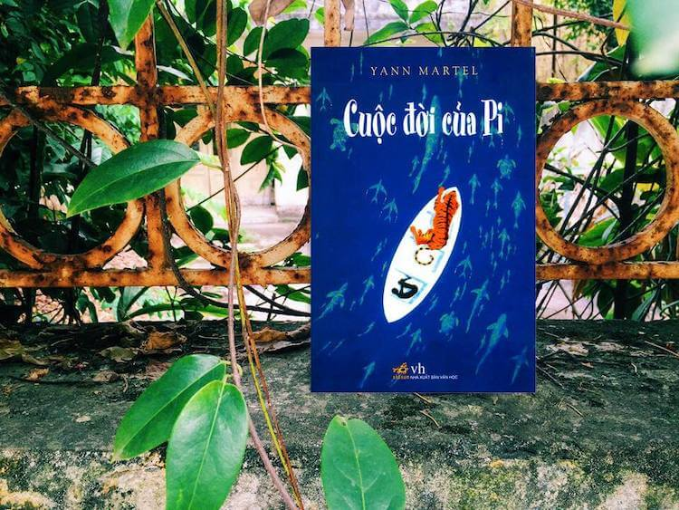
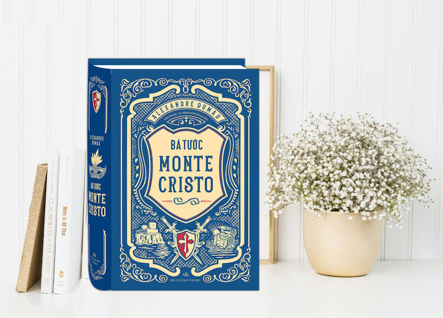

Đắc Nhân Tâm - Dale Carnegie

Đắc Nhân Tâm của tác giả Dale Carnegie được xem là quyển sách kinh điển hay nhất mọi thời đại. Quyển sách này nêu bật lên các nguyên tắc trong việc đối nhân xử thế rất khôn ngoan bắt đầu từ việc thấu hiểu, những bài học thu phục lòng người và làm mọi người yêu mến. Cho đến nay sách đã được dịch ra hầu hết tất cả các ngôn ngữ và là một trong những quyển sách bán chạy nhất thế giới mà bạn không nên bỏ qua.
Cuốn Theo Chiều Gió - Margaret Mitchell

Cuốn Theo Chiều Gió là tiểu thuyết kinh điển của nền văn học Mỹ xuất bản lần đầu năm 1963. Cuốn sách lấy bối cảnh từ cuộc nội chiến khốc liệt giữa Bắc và Nam Mỹ để khắc họa tình yêu thương con người, sức mạnh vượt qua khổ đau, bất hạnh và tình yêu nam nữ. Nhân vật chính của tiểu thuyết là cô gái Scarlett O’hara cùng với chàng trai Rhett Butler, họ đã sống, đã yêu và đã tạo nên những hình tượng văn chương bất hủ, xóa nhòa mọi chuẩn mực về con người trong thời đại đó, khiến người đọc nhớ mãi không quên. Không chỉ thể hiện tình yêu lứa đôi, Cuốn Theo Chiều Gió còn là bài ca của tình yêu quê hương đất nước, tình tương thân tương ái, đoàn kết. Cuốn sách sẽ giúp cho người đọc có thêm động lực và sự cổ vũ sức mạnh để vượt qua mọi khó khăn, trắc trở và có được một hạnh phúc đúng nghĩa.
Nhà Giả Kim - Paulo Coelho

Với hơn 65 triệu bản được bán ra trên toàn thế giới, Nhà Giả Kim sẽ là cái tên tiếp theo trong số những cuốn sách hay nhất mọi thời đại chắc chắn bạn không nên bỏ qua. Đây là tác phẩm phù hợp với những ai đang cần tìm kiếm định hướng đúng đắn cho bản thân mình. Cốt truyện xoay quanh về hành trình của cậu bé chăn cừu tên Santiago trên con đường kiếm tìm kho báu tại Kim Tự Tháp Ai Cập. Trên đường đi cậu đã tìm thấy tình yêu của đời mình nhưng vẫn không từ bỏ mục đích ban đầu mà tiếp tục hành trình khám phá. Tác phẩm đã giáo dục người đọc về việc dám theo đuổi và cố gắng chinh phục ước mơ. Đồng thời cũng giúp chúng ta nhận ra rằng hạnh phúc nhiều khi không cần tìm kiếm đâu quá xa xôi mà nó nằm ở ngay cạnh bên hoặc nơi ta đã từng đi qua. Tìm kiếm vận mệnh của chính mình và cuộc đời sẽ hào phóng với những ai theo đuổi nó.
Bố Già - Mario Puzo

Bố Già là cuốn tiểu thuyết làm nên tên tuổi của nhà văn người Mỹ gốc Ý Mario Puzo. Nội dung chính của tác phẩm nói về một thế lực Mafia Mỹ với ông trùm Don Vito Corleone thường được mệnh danh là “bố già”. Xung quanh ông luôn có nhiều kẻ thù muốn tìm cách hãm hại ông, nhưng đều bị ông trừng trị một cách tàn nhẫn. Tuy nhiên đối với gia đình và người thân của mình, “bố già” này lại sống rất tình cảm, và luôn giúp đỡ khi họ gặp khó khăn hoạn nạn. Cuốn sách hay nhất mọi thời đại này sẽ đưa đến cho người đọc những triết lý sống đáng để suy ngẫm và xứng đáng là đỉnh cao trong sự nghiệp văn chương của nhà văn Mario Puzo tính đến bây giờ.
Ông Già Và Biển Cả - Ernest Hemingway
Tác phẩm kinh điển Ông Già Và Biển Cả của nhà văn Ernest Hemingway được đánh giá là một trong những quyển sách hay nhất mọi thời đại. Tác phẩm thuộc thể loại truyện viễn tưởng với nội dung kể về sự đối đầu của một ông lão đánh cá và một con cá hung dữ ở trên biển. Qua tác phẩm này, người đọc sẽ cảm nhận được khát vọng lớn lao của con người để chinh phục thiên nhiên. Đây là một tác phẩm giúp cho những ai đang muốn bỏ cuộc, đang lạc lối tìm được động lực vững chắc cho bản thân mình.
Hoàng Tử Bé - Antoine de Saint-Exupéry

Hoàng Tử Bé là cuốn tiểu thuyết dành cho thiếu nhi nhưng những độc giả ở mọi lứa tuổi đều có thể rút ra bài học cho chính mình. Đây không đơn giản chỉ là một cuốn tiểu thuyết mà trong đó còn lồng ghép những bài học, câu chuyện khiến người đọc phải suy ngẫm. Cho đến nay Hoàng Tử Bé được dịch thành 250 ngôn ngữ khác nhau, cùng hơn 200 triệu bản in trên toàn thế giới và luôn thuộc top những cuốn sách hay nhất mọi thời đại.
Chiến Tranh Và Hòa Bình – Leo Tolstoy
Đây là cuốn sách với nội dung nói về cuộc xâm lăng của Napoleon vào nước Nga. Tác phẩm này không có nhân vật chính mà thay vào đó người đọc sẽ đắm chìm vào những câu chuyện xoay quanh mưu cầu cá nhân và chính trị của một tầng lớp. Dù có xuất thân và hoàn cảnh khác nhau nhưng họ đều có mục tiêu chung là chống lại quân xâm lược của Napoleon. Chiến Tranh Và Hòa Bình xứng đáng là kiệt tác của nhân loại về những triết lý sâu sắc giữa cái thiện và cái ác trong cuộc đời và là cuốn sách để bạn nghiền ngẫm trước những câu chuyện đầy triết lý.
Không Gia Đình - Hector Malot

Đây là một cuốn truyện về cậu bé Remi không có cha mẹ, người thân nhưng em vẫn được nuôi nấng đàng hoàng và sống trong hạnh phúc. Dù cuộc sống đầy vất vả nhưng Remi vẫn lao động tử tế và là người có phẩm chất ngay thẳng, gan dạ và thương người. Tác phẩm này sẽ mang đến cho độc giả giá trị nhân văn to lớn trong cuộc sống về tình cảm gia đình và xứng đáng là một cuốn sách bất hủ dành cho mọi lứa tuổ
Cuộc Đời Của Pi - Yann Martel
Đây là một cuốn sách hay, câu chuyện về cậu bé Pi kiên cường không chịu lùi bước trước số phận, cho dù trải qua bao khó khăn. Qua cuốn sách, nhà văn đã cho thấy nghị lực phi thường của con người và những giá trị của cuộc sống, sự may mắn khi ta được sinh ra và sống bình yên mỗi ngày. Vào năm 2001 cuốn sách đã bán được 7 triệu bản và được dịch ra 41 thứ tiếng khác nhau và cũng là một cuốn sách đáng để bạn tìm đọc.
Bá Tước Monte Cristo - Alexande Dumas
Cuốn sách được viết bởi tác giả Alexande Dumas và là tác phẩm luôn nằm trong top sách hay nhất mọi thời đại. Nội dung kể về chàng thủy thủ trẻ tuổi Edmond Dantes có một tương lai hết sức sáng lạn nhưng lại bị hại và bắt giam vào ngày trọng đại của mình. Trải qua cuộc sống 14 năm tù, Dantes quay về đất liền làm lại cuộc đời bằng kế hoạch trả thù cùng với khối tài sản khổng lồ từ linh mục ở trong tù, anh trở thành bá tước Monte Cristo. Tác phẩm với lối viết hào nhoáng, dẫn dắt từ từ vào những câu chuyện gây cấn và hấp dẫn sẽ làm cho người đọc một khi đã cầm cuốn sách này lên thì không thể nào bỏ xuống được.